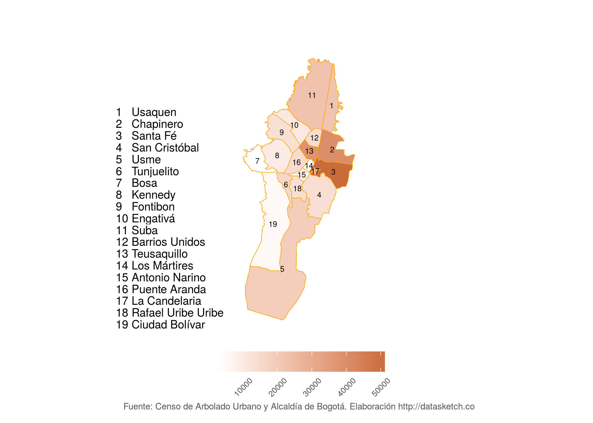

Los gigantes de bogotá están torturados
En Bogotá hay 1.2 millones de árboles públicos . Sin importar su tamaño o especie, no son suficientes para mitigar la huella ambiental de la ciudad ni para garantizar el bienestar de los bogotanos. ¿Qué hacer?
A Juan Sebastián le gustaba caminar por el parque Nacional y subir hasta casi el final del mismo para alejarse del ruido y la gente. Se acostaba a los pies de un eucalipto y se quedaba mirando sus hojas moverse contra el viento. Las ramas eran tan grande que parecía que salieran otros árboles de él. Este era su escape en medio del estrés de la vida universitaria. Allí encontraba paz. Cuál sería su sorpresa cuando después de unas vacaciones intersemestrales volvió a visitar el árbol y vio que lo habían talado.
La historia de Juan Sebastián se repite en cientos de bogotanos, que crecieron jugando a la sombra de árboles frondosos y que luego desaparecieron. Según el censo de arbolado público, la ciudad tiene 1,2 millones de árboles públicos sembrados en vías, parques, rondas de ríos y aceras. Desde hace unos 20 años, la arborización empezó a pensarse en la ciudad como una actividad fruto de la planeación y no de la espontaneidad de las personas.
“El programa ‘Bogotá se viste de verde’ fue el que le permitió a la ciudad empezar a planear su desarrollo arbóreo”, explica el ingeniero forestal Eduardo Bermúdez, quien participó de esa estrategia.
Durante este proyecto, que se desarrolló en el año 1998 durante la primera alcaldía de Enrique Peñalosa, se diseñó un manual verde para la capital que permitía entender el diagnóstico de la siembra y qué árboles eran los que le convenían.
“Antes de eso no había planeación, por eso había árboles que dañaban las vías, afectaban los cables de luz o que simplemente no eran aptos para la ciudad. Hubo talas masivas y se reemplazaron especies como los urapanes por los cauchos”, añade Bermúdez.
Y es que hasta el momento en Bogotá se había sembrado por épocas y con objetivos diversos sin pensar a largo plazo. “Los urapanes llegaron a la ciudad cuando un ingeniero japonés propuso su siembra de manera indistinta para hacer que Bogotá se viera más verde cuando se decidió que en la capital se iba a realizar la Conferencia Panamericana de 1948”, explica Bermúdez.
Los árboles cumplieron su objetivo, pero años después fueron declarados habitantes no gratos por ser especies agresivas, con raíces profundas y de gran tamaño. Y por eso, a finales de siglo, fueron los primeros en ser talados y sustituidos por cauchos, cosa que sucedió con otras muchas especies.
Sin embargo, veinte años después, la capital colombiana tiene un déficit de árboles. Esta ciudad de la furia, que se debate entre trancones, smog y estrés, no ha plantado lo necesario para mitigar la huella ambiental que genera y asegurar a la vez la salud y el bienestar de sus ciudadanos. Y la planeación sigue siendo uno de sus principales retos.
Cómo se decide qué sembrar
En Bogotá es el Jardín Botánico la entidad que se encarga de diseñar los criterios para el establecimiento condiciones técnicas y sociales de plantación, según el manual de silvicultura urbana. A su vez, debe seleccionar las mejores plantas según criterios ecológicos, paisajísticos y de diseño, entre otros.
Plantar un árbol en la ciudad cuesta al menos 177.321 pesos, costo que puede aumentar dependiendo de la especie y las necesidades del espacio. Este presupuesto proviene del Plan de Desarrollo Bogotá Mejor para Todos, que contempla la plantación de 85.000 árboles en espacio público de uso público.
De esto se deben encargar entidades como IDU, IDRD, EAAB, Alcaldías Locales, y Jardín Botánico. Esta última deberá plantar al menos 40.000 individuos y asegurarse del mantenimiento de los mismos, cosa que cuesta al menos 60.000 pesos por especie sembrada.
Sin embargo, alcanzar esta meta no es tarea fácil. “La ciudad ha crecido de manera exponencial y mucha de la siembra de árboles y la creación de zonas verdes se ha dado cuando ya todo lo demás está construído”, considera el profesor e ingeniero forestal César Augusto García.
Esta es una realidad que se ve especialmente al sur, donde el desarrollo urbano se dio mucho más rápido que lo que se gestó la planeación arbórea. En consecuencia, hay localidades de Bogotá con mucha menos disponibilidad de áreas arborizables que otras.
“Mártires, Candelaria y Antonio Nariño tienen condiciones diferentes a localidades como Suba o Usaquén, donde hay mayor disponibilidad de espacio no urbanizado, susceptible de siembra”, explica Claudia Marcela Serrano, profesional de la Oficina de Arborización Urbana del Jardín Botánico de Bogotá.
Además de ellos, el profesor García resalta que Bogotá es una ciudad con múltiples microclimas, por lo que no en todas partes se puede sembrar árboles de gran tamaño o follaje.
Por ello, erróneamente se cree que en el norte hay más árboles que en el sur de Bogotá. O que se ha hecho una mayor inversión en unas localidades que en otras. Sin embargo, cuando no se puede sembrar, el Jardín Botánico se encarga de proveer coberturas verdes, jardines verticales o jardines pequeños en espacios públicos y privados.
Pocos árboles para una ciudad de cemento
Bogotá tiene 0,15 árboles por habitante, una cifra muy por debajo de lo que recomienda la Organización Mundial de la Salud (OMS) para tener un aire de mejor calidad.
Según esta organización, las grandes metrópolis deberían tener al menos 1 árbol por cada tres habitantes. Bogotá, a pesar de estar rodeada por montañas y tener grandes áreas verdes, como el Parque Simón Bolívar, no roza esta cifra.
 “Cada administración ha tenido una visión diferente de lo que significa la ciudad y en ese sentido de lo que significa la arborización, lo que ha hecho difícil que se mantengan planes a largo plazo”, explica el ingeniero forestal Max Triana.
Por ejemplo, en la actualidad en Bogotá prima el embellecimiento de la ciudad con jardines sobre la siembra de árboles. “Y eso no está mal, solo es diferente”, agrega Triana.
Sin embargo, esto ha hecho que los árboles de la ciudad “estén torturados” por la cantidad de metales y partículas contaminantes que recolectan. “Se mantienen en pie porque son berracos, pero dan una lucha dura que no puede depender sólo de ellos”, explica el ingeniero.
Como consecuencia, el proceso normal de fotosíntesis de los mismos no alcanza el máximo desempeño posible. “Muchos árboles están sanos pero cubiertos de material particulado grueso, necesitamos lavarlos para que puedan seguir trabajando por la ciudad” añade el profesor.
“Los árboles no son eternos. Si los queremos para que ayuden a limpiar el aire, tenemos que hacer un recambio cada cierto tiempo, pues después de cierta edad estas funciones empiezan a deteriorarse”, suma el profesor García.
Y es que aunque el distrito ha sembrado 397.845 árboles en los últimos diez años, estas plantas por si solas no son suficientes. El impacto ambiental que produce la ciudad no podrá ser mitigada únicamente con la siembra.
“Recuperar el aire de Bogotá a partir de árboles es imposible. Se necesitan pulmones verdes en la ciudad, como pequeños bosques, pero también se necesita integrar otras políticas que disminuyan la contaminación”, explica García.
De hecho, estudios del Sistema Forestal de los Estados Unidos demuestran que los árboles sólo reducen la contaminación del aire urbano en un 1%.
Las políticas de planeación siguen pareciendo improvisadas y, de una u otra manera la ciudadanía se siente excluida del proceso. Ejemplo de esto es el rechazo por parte de la Alcaldía de Peñalosa a la donación de 2.339 árboles destinados para la reserva Van der Hammen. Tampoco ha escapado de la polémica la decisión de la CAR de Cundinamarca de hacer un recambio en los cerros orientales de 4.000 hectáreas de eucaliptos y pinos por especies nativas.
“El problema de fondo no es sembrar más o menos, es saber sembrar el árbol correcto en el lugar correcto. Y en esto, todavía tenemos mucho que aprender”, concluye el ingeniero Bermúdez quien pone como ejemplo los robles de la 26.
“Estas son especies fuertes pero mostraron que tienen poca capacidad para asimilar la contaminación de los vehículos de esa zona y están enfermos. Tenemos que aprovechar el censo y decidir si los reemplazamos o si sembramos nuevas especies”, agrega.
“Sería muy especial tener una cultura verde en la ciudad. Que cada niño que nazca tenga su propio árbol, que haya una apropiación del entorno de manera más fuerte y real”, concluye el profesor García. A esto habría que sumar medidas políticas y económicas que reduzcan la polución en la ciudad.
See also
Los gigantes de bogotá están torturados

11 árboles para conocer Bogotá

Al árbol más viejo de Bogotá le quedan 15 años de vida

Las diez cosas que debes saber sobre la arborización en Bogotá

El catálogo de árboles


FOOTER
Este es un trabajo de periodismo de datos del equipo de Datasketch. Revisa cómo creamos este especial en la metodología
Todo el material en esta página es CC-BY-SA. Si reusas o adaptas recursos de esta página por favor vincula y referencia nuestro artículo o página.